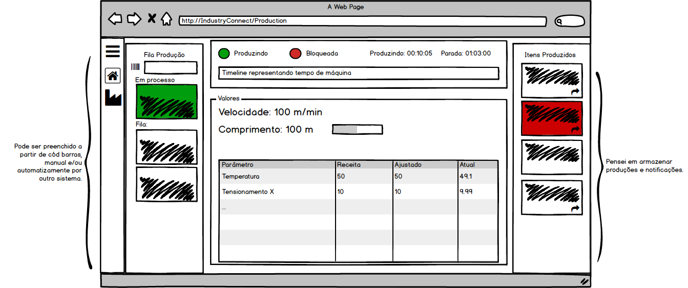
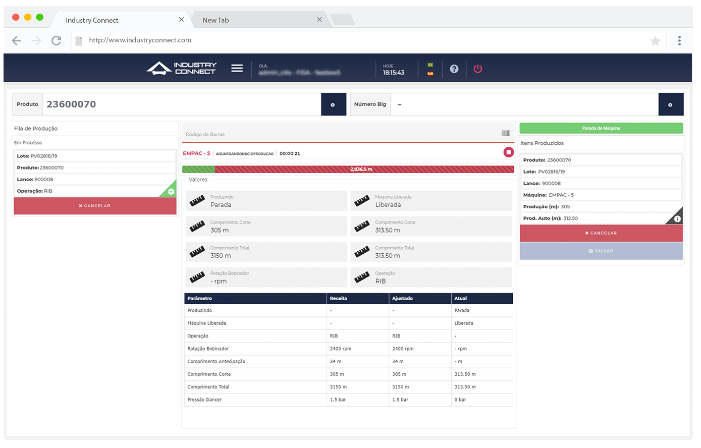
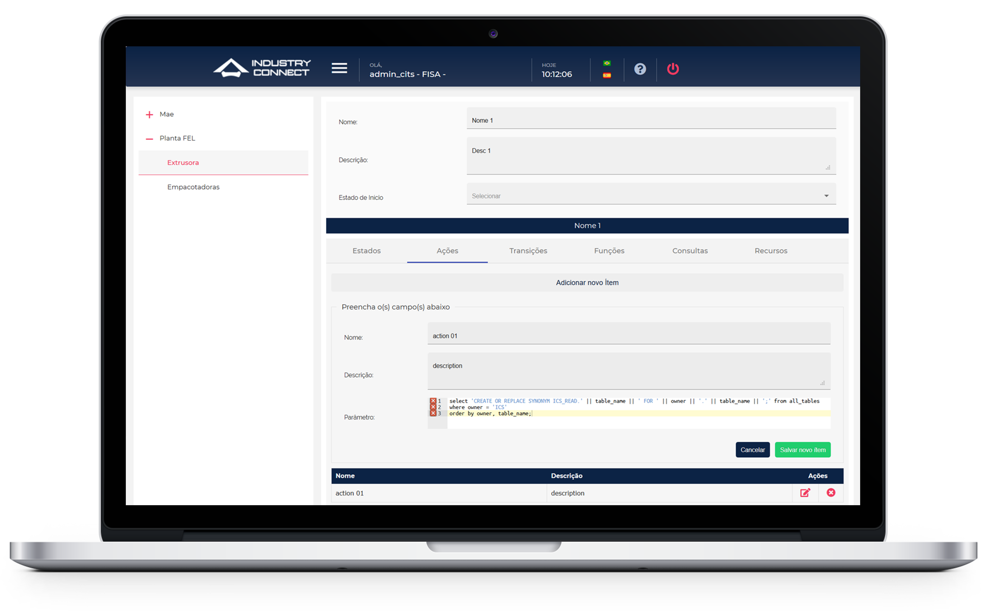

Furukawa is a worldwide company known for its world’s leading FTTx product
portfolios, including optical fiber, cable, closure, cabinet, connectivity, tools, and related
solutions.
This production has a lot of processes, including the paint of the material, cut the cables,
process the labels, measurements of production, etc... and this project is to bring the freedom
of automation to these productions through a software configuration of these machines.
Validating the problem
This first phase of the project was easy to know what the problem was.
They simply didn't have a software that would do the automation they were looking for.
They didn't have working software at the fabrics.
They need multi-language software since it would be installed worldwide.
The operator will use this software wearing a heavy industrial glove in a touch screen.
Commercial Interface since would work outside Furukawa.
Solutions
Develop online access software in which the update becomes unique for everyone.
Work wisely with the words at the system so the translator API doesn't break the layout with
large words.
Make the system all touch when related to the operator's screen.
Use a color system that will fit properly to Furukawa and outside.
Lo-Fi Wireframe
The lo-fi wireframe is the blueprints of the project, they connect the information architecture
with the visual design. Below has some examples of the wireframes carried out on this project.
Featured
to the customer primarily for navigation approval and user testing - after all user testing can
be easy and cheap and must be done from the beginning of the project to ensure the
success of the solutions presented.
In this case, the wireframe was given to me through the product manager, and during the user
test process, the change from the main idea, and the real product is very clear. This shows how
important it is to understand the client and have a full test design system since the beginning.

Visual Design
Within this project, we need to use the visual design to remember a little Furukawa but without
thinking that is a
system that will be used outside the client.
We focused on big buttons, big information, and big space between elements, so the user wouldn't
miss the click, since the operator will only have a screen resolution of 1024px and will
manipulate the inputs with gloves.

 Furukawa is a worldwide company known for its world’s leading FTTx product
portfolios, including optical fiber, cable, closure, cabinet, connectivity, tools, and related
solutions.
This production has a lot of processes, including the paint of the material, cut the cables,
process the labels, measurements of production, etc... and this project is to bring the freedom
of automation to these productions through a software configuration of these machines.
Furukawa is a worldwide company known for its world’s leading FTTx product
portfolios, including optical fiber, cable, closure, cabinet, connectivity, tools, and related
solutions.
This production has a lot of processes, including the paint of the material, cut the cables,
process the labels, measurements of production, etc... and this project is to bring the freedom
of automation to these productions through a software configuration of these machines.